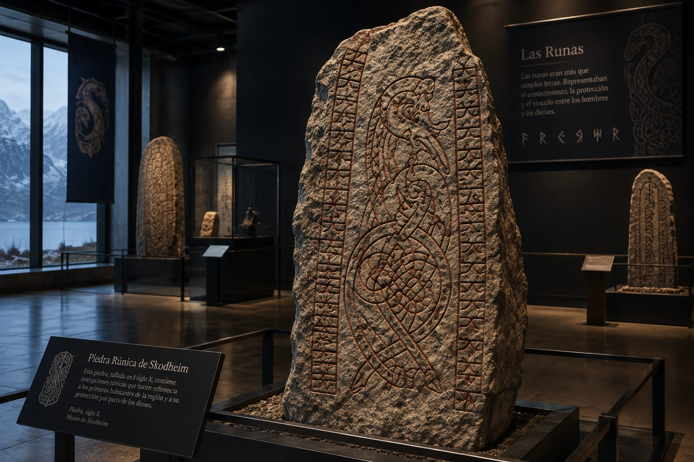

Fundacion de Skodheim
Fundada en el año 872, skodheim comenzo como un pequeño asentamiento vikingo junto a los fiordos.
Su ubicacion protegida entre las montañas permitio que creciera hasta convertirse en un importante centro de navegacion y comercio
Las runas
Las antiguas piedras runicas son uno de los simolos mas importantes de Skodheim.
Segun la historia, los primeros habitantes encontraron runas grabadas en una enorme roca poco despues de establecerse en la region. Ellos creian que aquellas inscripciones eran mensajes de los dioses, y que su interpretacion traeria prosperidad y proteccion a la comunidad. Con el tiempo, las runas se convirtieron en un elemento central de la cultura local, y hoy en dia se pueden encontrar algunos ejemplares conservados en el museo de la fortaleza de la ciudad.

Leyendas
La leyenda mas conocida de skodheim habla de un antiguo dragón de dos cabezas que, segun los habitantes, duerme en una caverna bajo las montañas.
Se dice que la criatura es el guardian de la ciudad, y que despertara solamente cuando Skodheim se encuentre ante su mayor amenaza.
Costumbres
Una de las principales costumbres de Skodheim es reunirse durante las noches más frías alrededor
de grandes fogatas, donde las familias comparten comidas tradicionales y cuentan antiguas
historias sobre dioses, criaturas y héroes nórdicos. También es común que los habitantes
decoren las puertas de sus casas con ramas de abeto durante el invierno como símbolo de
protección y buena fortuna.
Los habitantes de Skodheim mantienen además una fuerte relación con el mar. Muchos
habitantes conservan la tradición de realizar pequeñas ceremonias antes de navegar por los
fiordos, en recuerdo de sus antepasados navegantes.
Otra costumbre muy popular es observar las auroras boreales desde los miradores de las montañas.
Cuando aparece la primera gran aurora del invierno, las familias suelen reunirse para
contemplarla y brindar por la prosperidad de la ciudad durante el año siguiente.
Tradiciones
Una de las celebraciones más importantes es el Festival de las Luces del Norte, realizado cada
año durante la época de mayor actividad de las auroras boreales. Durante el festival, las calles
se iluminan con antorchas y lámparas, se realizan representaciones de antiguas leyendas nórdicas
y los habitantes utilizan vestimentas tradicionales.Otra tradición importante es el Día del
Escudo, celebrado una vez al año en honor a los antiguos defensores de Skodheim. Durante esta
festividad se realizan desfiles, competencias de lanzamiento de hachas y tiro con arco,
demostraciones de navegación y recreaciones de antiguas batallas.También existe la tradición de
construir pequeños barcos de madera y colocarlos sobre el agua del fiordo durante el Rito de los
Navegantes, como homenaje a los habitantes de Skodheim que murieron durante antiguas expediciones
marítimas.